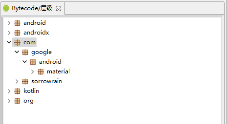
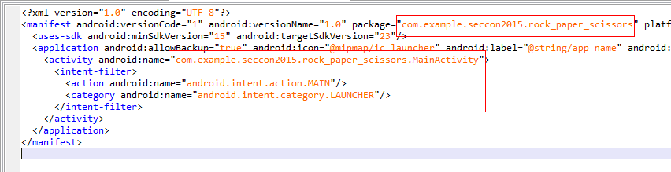

笔者默认读者有一定的逆向能力及面向对象编程能力，将不对部分专业词汇进行解释
本文适合没有Android开发经验的CTF逆向初学者阅读
上次聊了聊安卓与Apk，这次我们就来着手下逆向。
Android逆向大致分为Java层和Native层两层，我们先来说说Java层
一. 工具
工欲善其事，必先利其器。
有多种工具可以反编译Dex文件，但我更推荐jeb
需要注意的是，jeb需要java环境。使用前请确保环境完备
无论是Kotlin还是Java，市面上的工具都会将其反编译为Java，放心使用即可
使用jeb和使用IDA很像：拖入apk文件，jeb会自动读取并反编译为smali代码
你可以在右侧的bytecode层级树中切换你想查看的类，并使用tab键查看java代码

左上方的工程浏览器则是整个apk文件的架构，你可以查看Manifest，签名详情，apk资源等
当然，jeb的功能十分强大，随着学习的深入，你还会了解并使用到更多功能
如果你找不到jeb，或者无法配置环境，也可以选择JADX-GUI，同样是一款dex的反编译工具，功能没那么强大就是了
二. 开始逆向
在开始逆向前，我推荐下载apk并安装到手机上。如果你恰好是ios用户……请选择虚拟机
在Bytecode层级树中找到MainActivity，我们的逆向就此开始
……什么？不知道怎么找，好吧，这确实是个问题
把上面的图片拉下来，我们再来看看
在这个层级树中，android、androidx都是开发者使用的安卓库，不可或缺
com.google.material是material库，google为开发者提供了这个库，以便更方便的实现Material Design（mdyyds！）
kotlin则说明开发者使用了kt进行编写，kt的反编译结果和java不太一样，但区别不大
那么如何找到我们的逆向起点MainActivity呢？这时manifest文件就起到了作用，在工程浏览器上打开manifest文件，如图

package=""是当前apk的包名
下方的MainActivity带有MAIN和LAUNCHER标签，说明该Activity是这个apk的主活动和启动界面，也就是从手机桌面上打开软件时启动的那个界面
注意，不一定所有带有MAIN和LAUNCHER的Activity都叫MainActivity，我完全可以起其他名字，所以先看manifest往往是正确的选择
这个方法适用于大部分apk，你可以拿出一道ctf题目试一试
三. Activity
想了想，还是写了个简单的Demo，可以点击下载
PermaLink:
http://blog.sorrowrain.com/CTF Android逆向入门浅谈（二）/